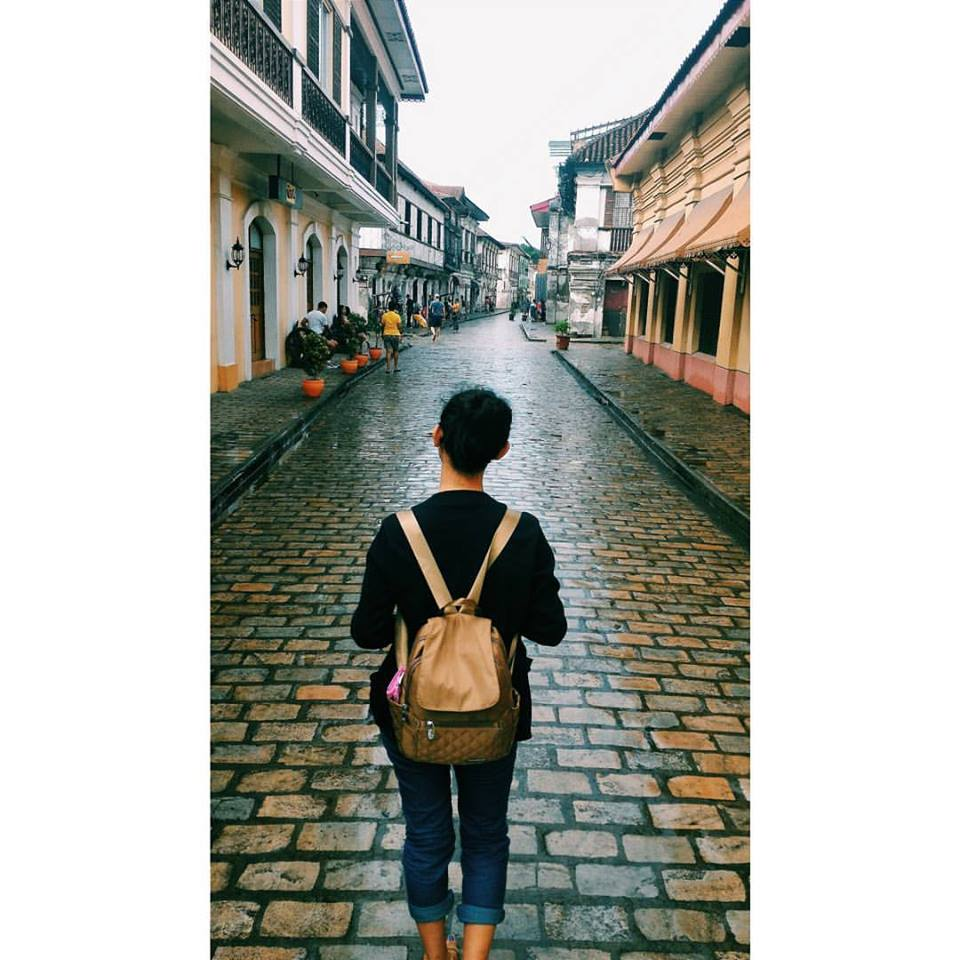

Prior from going to Laoag. We went to see Vigan for a very short time. We just had a tour around the ancient city with the help of our very enthusiastic "kalesa driver"/tourguide. We went to the different house of prominent people in the city.

The calles really give a vibe of prestige and elegance. Walking there makes me think of how life must have been like during the Spanish Era.